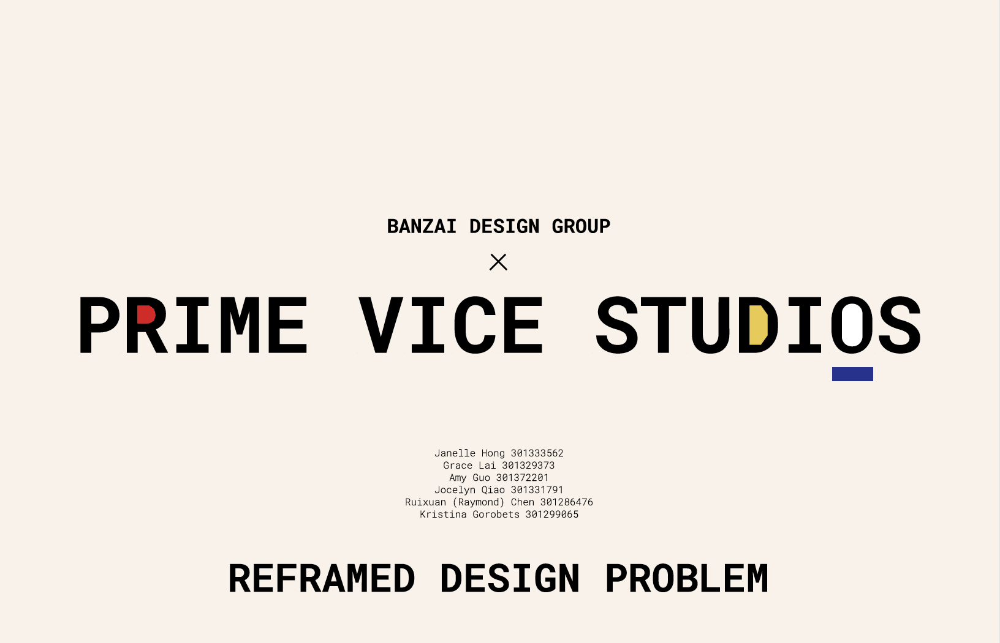
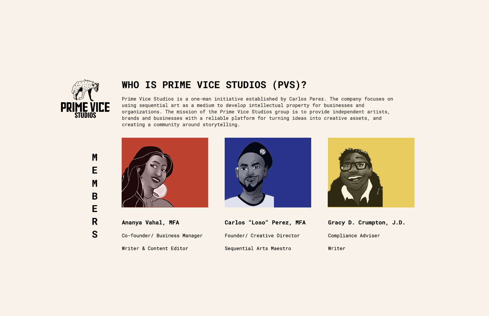
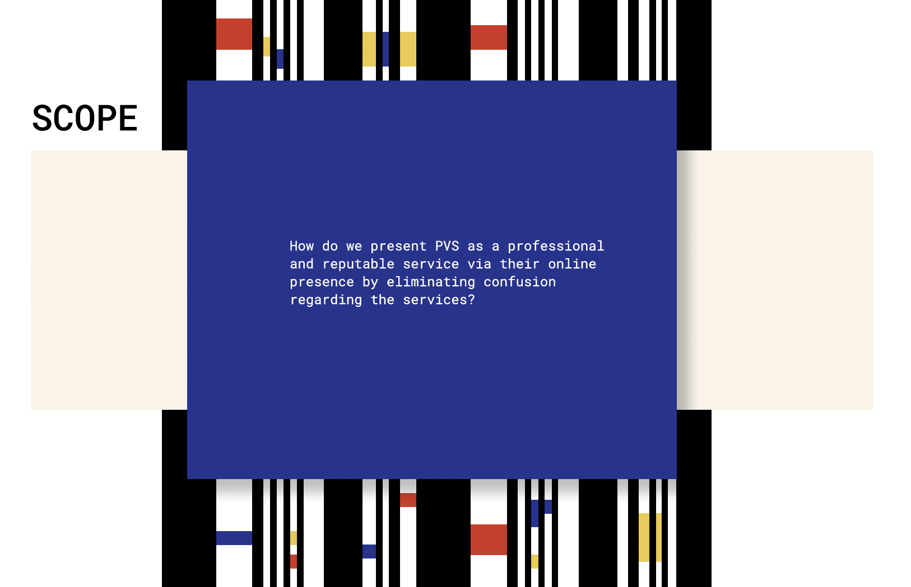
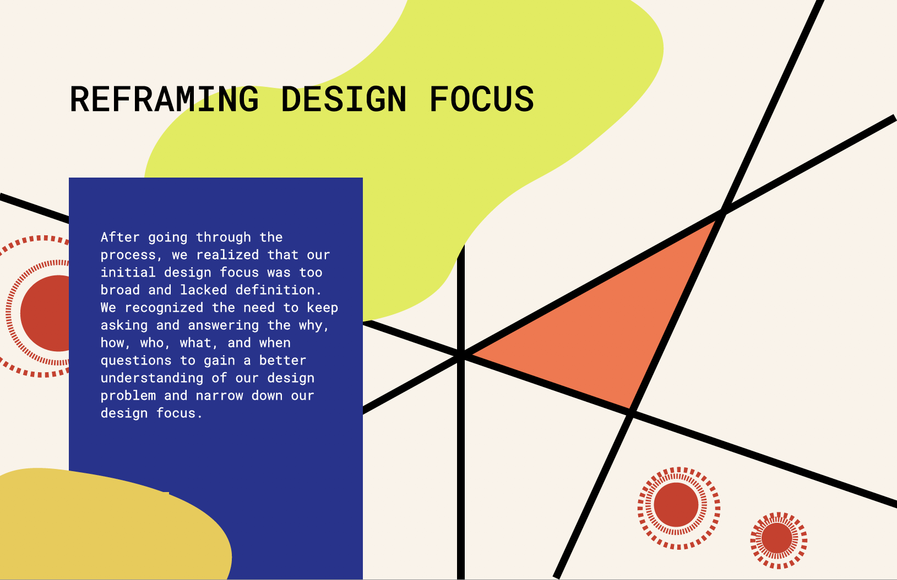
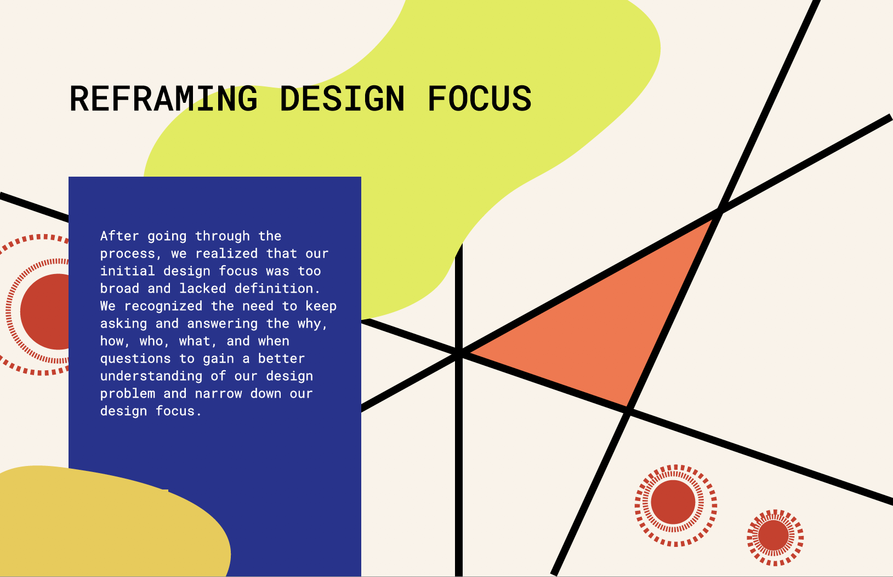
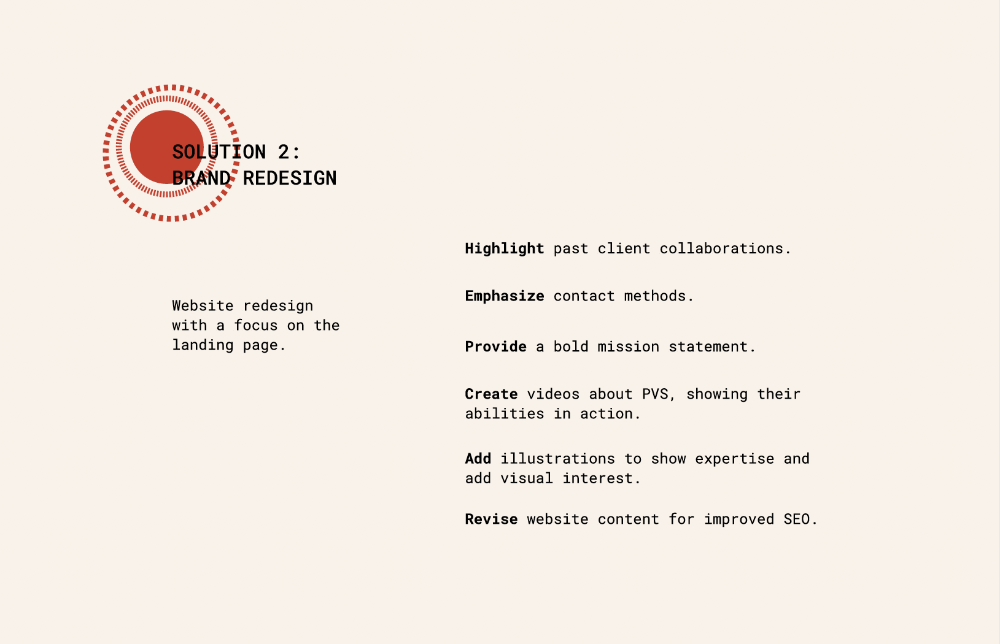
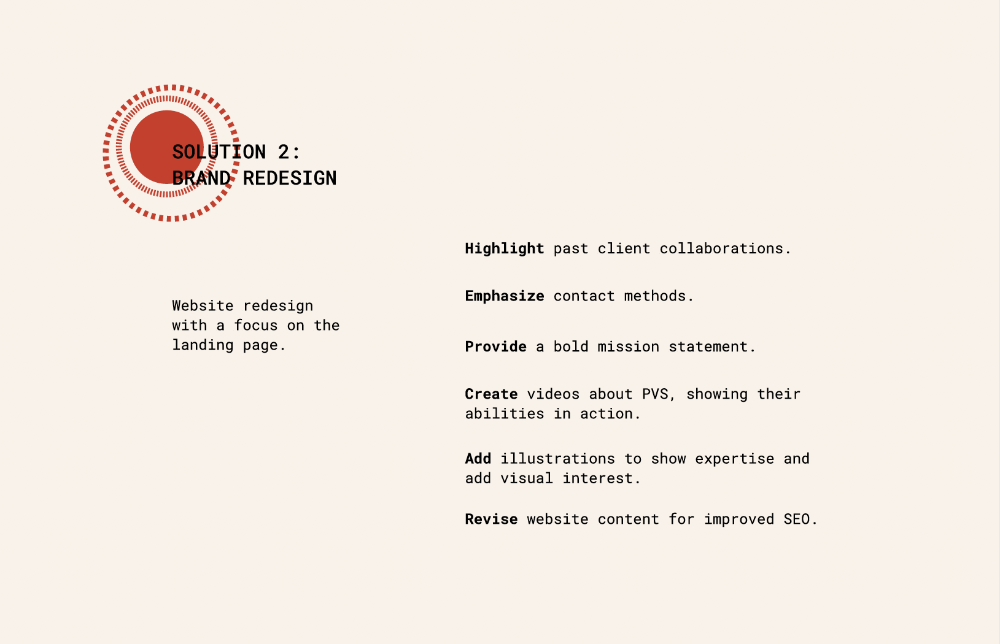

Reframed Design Focus
2020 Fall
Overview
Reframed Design Focus slides were made for a team presentation of the interactive design methods course. The goal of this project was to create a collection of slides that demonstrate what we learnt through previous iterations of design.
Our Client
Our client was Prime Vice Studio, a design creative company that employs sequential art to develop intellectual property for businesses and organiztaions.
Role
My role in this project was to design the slides. The writing part was already done by other teammates, so my major task was to create layout and add pictures. Since the client is a creative company, me and my two other teammates wanted to use bold colours in the slide to reflect the artistic aspect of the company. The colour palette was inspired bythe paintings of the Dutch painter Piet Mondrian.
Challenge
The project was heavily text-based, therefore, I didn’t put many images throughout the entire slides. Without images, plain text made the slide look extremely dull. Another problem about this project was the colour we chose were quite bold and bright. If we abused them on every slide, the result would be noisy and messy. However, I later realized that if I only focus on the disadvantages I could solve nothing. Therefore, I tried to look at the bright side of the two problems, and eventually found a solution to solve them. I used these bright colours to decorate the slide while maintaining enough whitespace to avoid making the design overwhelming. Images below are examples from our design process.
 

 
